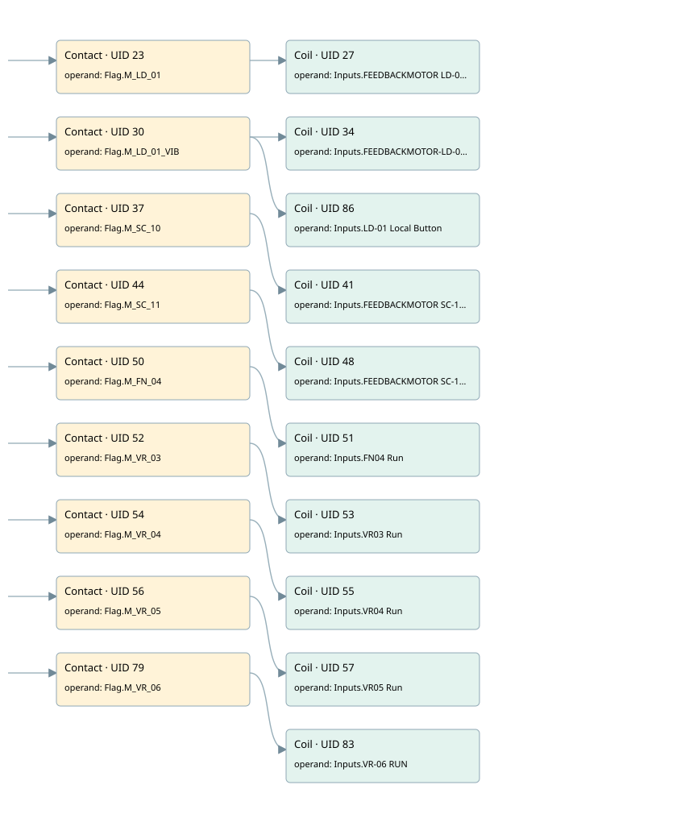

motors simulated
simulation · 검색 색인 순서 7 · 원본 내부 NID 추정 4
백업 PLF 원본의 2998953 바이트 위치에서 복원한 XML. 검색 문서 1085의 객체 키 161022007628000000000000와 연결했다. 이름 해석 19/19개. 남은 RefId는 상수 또는 미해석 참조다.
연결 구조 다시 그리기
원본 Part/PCon/Wire를 이용한 연결도다. TIA 화면의 래더 배치 또는 실행 결과를 재현한 그림은 아니다. 핀 연결은 아래 표와 원본 XML을 기준으로 읽는다. 노드 위에 마우스를 두면 피연산자 이름을 볼 수 있다.

접점·코일·블록과 피연산자
| Part UID | Gate | Negated 핀 | 연결 피연산자 |
|---|---|---|---|
| 23 | Contact | operand = Flag.M_LD_01 | |
| 27 | Coil | operand = Inputs.FEEDBACKMOTOR LD-01 | |
| 30 | Contact | operand = Flag.M_LD_01_VIB | |
| 34 | Coil | operand = Inputs.FEEDBACKMOTOR-LD-01A | |
| 86 | Coil | operand = Inputs.LD-01 Local Button | |
| 37 | Contact | operand = Flag.M_SC_10 | |
| 41 | Coil | operand = Inputs.FEEDBACKMOTOR SC-10 | |
| 44 | Contact | operand = Flag.M_SC_11 | |
| 48 | Coil | operand = Inputs.FEEDBACKMOTOR SC-11 | |
| 50 | Contact | operand = Flag.M_FN_04 | |
| 51 | Coil | operand = Inputs.FN04 Run | |
| 52 | Contact | operand = Flag.M_VR_03 | |
| 53 | Coil | operand = Inputs.VR03 Run | |
| 54 | Contact | operand = Flag.M_VR_04 | |
| 55 | Coil | operand = Inputs.VR04 Run | |
| 56 | Contact | operand = Flag.M_VR_05 | |
| 57 | Coil | operand = Inputs.VR05 Run | |
| 79 | Contact | operand = Flag.M_VR_06 | |
| 83 | Coil | operand = Inputs.VR-06 RUN |
접점 경로를 펼친 조건식
Contact·O/A·비교기의 원본 연결을 읽기 쉽게 펼친 보조 해석이다. POWER는 전원 레일 시작을 뜻한다. 호출 블록·에지·타이머의 내부 동작과 다중 쓰기 순서는 이 표로 실행 검증하지 않았다. 미해석 핀과 RefId는 원문 연결표에서 확인한다.
| UID | 동작 | 대상 | 원본 접점 경로 | 내용 |
|---|---|---|---|---|
| 27 | Coil | Inputs.FEEDBACKMOTOR LD-01 | Flag.M_LD_01 | 조건에 따른 Coil 기록 |
| 34 | Coil | Inputs.FEEDBACKMOTOR-LD-01A | Flag.M_LD_01_VIB | 조건에 따른 Coil 기록 |
| 86 | Coil | Inputs.LD-01 Local Button | Flag.M_LD_01_VIB | 조건에 따른 Coil 기록 |
| 41 | Coil | Inputs.FEEDBACKMOTOR SC-10 | Flag.M_SC_10 | 조건에 따른 Coil 기록 |
| 48 | Coil | Inputs.FEEDBACKMOTOR SC-11 | Flag.M_SC_11 | 조건에 따른 Coil 기록 |
| 51 | Coil | Inputs.FN04 Run | Flag.M_FN_04 | 조건에 따른 Coil 기록 |
| 53 | Coil | Inputs.VR03 Run | Flag.M_VR_03 | 조건에 따른 Coil 기록 |
| 55 | Coil | Inputs.VR04 Run | Flag.M_VR_04 | 조건에 따른 Coil 기록 |
| 57 | Coil | Inputs.VR05 Run | Flag.M_VR_05 | 조건에 따른 Coil 기록 |
| 83 | Coil | Inputs.VR-06 RUN | Flag.M_VR_06 | 조건에 따른 Coil 기록 |
원본 배선 연결
| Wire UID | 동일 Wire 연결 끝점 |
|---|---|
| 21 | Powerrail {} ↔ Part 23.in ↔ Part 30.in ↔ Part 37.in ↔ Part 44.in ↔ Part 50.in ↔ Part 52.in ↔ Part 54.in ↔ Part 56.in ↔ Part 79.in |
| 22 | ORef 24 (Flag.M_LD_01) ↔ Part 23.operand |
| 25 | Part 23.out ↔ Part 27.in |
| 26 | ORef 28 (Inputs.FEEDBACKMOTOR LD-01) ↔ Part 27.operand |
| 29 | ORef 31 (Flag.M_LD_01_VIB) ↔ Part 30.operand |
| 32 | Part 30.out ↔ Part 34.in ↔ Part 86.in |
| 33 | ORef 35 (Inputs.FEEDBACKMOTOR-LD-01A) ↔ Part 34.operand |
| 85 | ORef 87 (Inputs.LD-01 Local Button) ↔ Part 86.operand |
| 36 | ORef 38 (Flag.M_SC_10) ↔ Part 37.operand |
| 39 | Part 37.out ↔ Part 41.in |
| 40 | ORef 42 (Inputs.FEEDBACKMOTOR SC-10) ↔ Part 41.operand |
| 43 | ORef 45 (Flag.M_SC_11) ↔ Part 44.operand |
| 46 | Part 44.out ↔ Part 48.in |
| 47 | ORef 49 (Inputs.FEEDBACKMOTOR SC-11) ↔ Part 48.operand |
| 67 | ORef 58 (Flag.M_FN_04) ↔ Part 50.operand |
| 68 | Part 50.out ↔ Part 51.in |
| 69 | ORef 59 (Inputs.FN04 Run) ↔ Part 51.operand |
| 70 | ORef 60 (Flag.M_VR_03) ↔ Part 52.operand |
| 71 | Part 52.out ↔ Part 53.in |
| 72 | ORef 61 (Inputs.VR03 Run) ↔ Part 53.operand |
| 73 | ORef 62 (Flag.M_VR_04) ↔ Part 54.operand |
| 74 | Part 54.out ↔ Part 55.in |
| 75 | ORef 63 (Inputs.VR04 Run) ↔ Part 55.operand |
| 76 | ORef 64 (Flag.M_VR_05) ↔ Part 56.operand |
| 77 | Part 56.out ↔ Part 57.in |
| 78 | ORef 65 (Inputs.VR05 Run) ↔ Part 57.operand |
| 66 | ORef 80 (Flag.M_VR_06) ↔ Part 79.operand |
| 81 | Part 79.out ↔ Part 83.in |
| 82 | ORef 84 (Inputs.VR-06 RUN) ↔ Part 83.operand |
식별자 해석 근거 19개
| ORef UID | RefId | 이름 | IdentXmlPart 파일 | 해석 방법 |
|---|---|---|---|---|
| 24 | 120 | Flag.M_LD_01 | 0635-IdentXmlPart.xml | UID/RID + search-text + NID agreement |
| 28 | 119 | Inputs.FEEDBACKMOTOR LD-01 | 0635-IdentXmlPart.xml | UID/RID + search-text + NID agreement |
| 31 | 137 | Flag.M_LD_01_VIB | 0635-IdentXmlPart.xml | UID/RID + search-text + NID agreement |
| 35 | 122 | Inputs.FEEDBACKMOTOR-LD-01A | 0635-IdentXmlPart.xml | UID/RID + search-text + NID agreement |
| 87 | 367 | Inputs.LD-01 Local Button | 0635-IdentXmlPart.xml | UID/RID + search-text + NID agreement |
| 38 | 138 | Flag.M_SC_10 | 0635-IdentXmlPart.xml | UID/RID + search-text + NID agreement |
| 42 | 124 | Inputs.FEEDBACKMOTOR SC-10 | 0635-IdentXmlPart.xml | UID/RID + search-text + NID agreement |
| 45 | 139 | Flag.M_SC_11 | 0635-IdentXmlPart.xml | UID/RID + search-text + NID agreement |
| 49 | 126 | Inputs.FEEDBACKMOTOR SC-11 | 0635-IdentXmlPart.xml | UID/RID + search-text + NID agreement |
| 58 | 140 | Flag.M_FN_04 | 0635-IdentXmlPart.xml | UID/RID + search-text + NID agreement |
| 59 | 369 | Inputs.FN04 Run | 0635-IdentXmlPart.xml | UID/RID + search-text + NID agreement |
| 60 | 141 | Flag.M_VR_03 | 0635-IdentXmlPart.xml | UID/RID + search-text + NID agreement |
| 61 | 130 | Inputs.VR03 Run | 0635-IdentXmlPart.xml | UID/RID + search-text + NID agreement |
| 62 | 142 | Flag.M_VR_04 | 0635-IdentXmlPart.xml | UID/RID + search-text + NID agreement |
| 63 | 132 | Inputs.VR04 Run | 0635-IdentXmlPart.xml | UID/RID + search-text + NID agreement |
| 64 | 143 | Flag.M_VR_05 | 0635-IdentXmlPart.xml | UID/RID + search-text + NID agreement |
| 65 | 134 | Inputs.VR05 Run | 0635-IdentXmlPart.xml | UID/RID + search-text + NID agreement |
| 80 | 144 | Flag.M_VR_06 | 0635-IdentXmlPart.xml | UID/RID + search-text + NID agreement |
| 84 | 136 | Inputs.VR-06 RUN | 0635-IdentXmlPart.xml | UID/RID + search-text + NID agreement |
검색 코드 보조 자료
참조 명칭을 찾기 위한 자료이며 실행 순서나 AND/OR 관계는 위 연결표로 확인한다.
"flag".m_ld_01 "inputs"."feedbackmotor ld-01" "flag".m_ld_01_vib "inputs"."feedbackmotor-ld-01a" "inputs"."ld-01 local button" "flag".m_sc_10 "inputs"."feedbackmotor sc-10" "flag".m_sc_11 "inputs"."feedbackmotor sc-11" "flag".m_fn_04 "inputs"."fn04 run" "flag".m_vr_03 "inputs"."vr03 run" "flag".m_vr_04 "inputs"."vr04 run" "flag".m_vr_05 "inputs"."vr05 run" "flag".m_vr_06 "inputs"."vr-06 run"